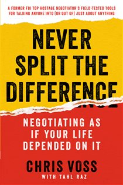
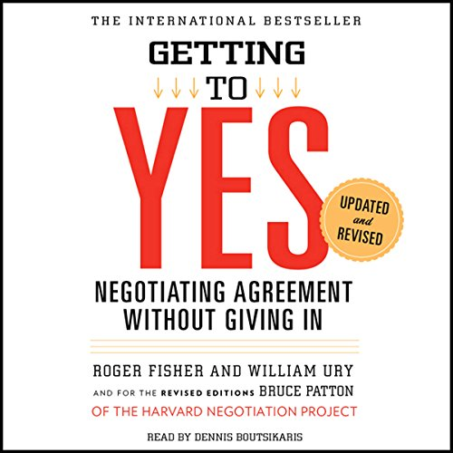

Library › Never Split the Difference vs Getting to Yes
Never Split the Difference vs Getting to Yes: Which Should You Actually Read?
Both books live on the same shelf: Power & Strategy. Both are free to read here, in full, right now. Never Split the Difference (2016, Chris Voss) argues: Negotiation isn't logic or compromise - it's emotional intelligence weaponized: tactical empathy, ca… Getting to Yes (1981, Roger Fisher & William Ury) argues: Don't bargain over positions: separate people from problems, focus on interests, invent options, ins…

Never Split the Difference
Voss spent 24 years negotiating with kidnappers, bank robbers, and terrorists - where 'splitting the difference' means someone dies. His system overturns business-school orthodoxy: people decide emotionally and justify rationally, so the negotiator's job is em
READ NEVER SPLIT THE DIFFERENCE FREE →
Getting to Yes
The Harvard Negotiation Project's field manual - the most influential negotiation book ever written - replaces the two broken defaults (HARD bargaining: contest of wills that damages relationships; SOFT bargaining: concessions that produce resentful losers) wi
READ GETTING TO YES FREE →⚖ The Straight Answer
Read Never Split the Difference if you want the fbi's lead hostage negotiator teaches you to negotiate as if your
Read Getting to Yes if you want negotiating agreement without giving in - the harvard method: principl
The honest order for most readers: start with Getting to Yes for the base, then go deeper with the other. Both summaries are free, no paywall, in 26 languages.
Every summary is free: lessons, examples, action steps, audio in your language.